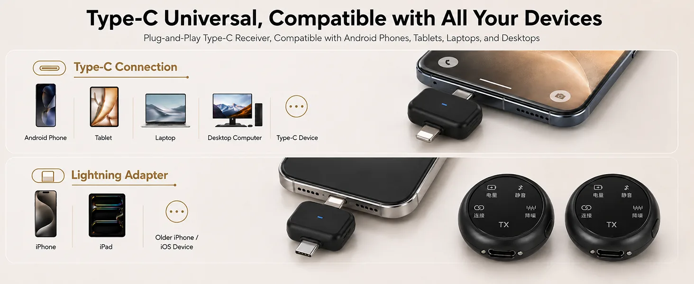
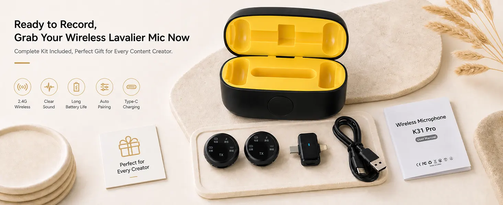
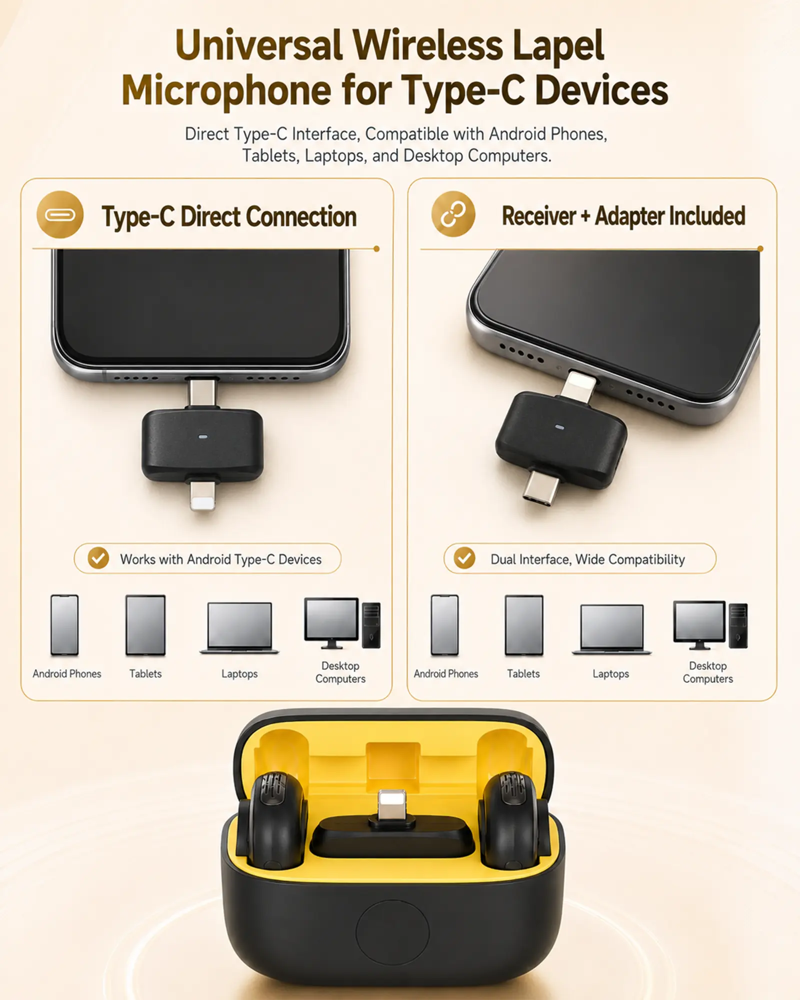

Skip to content
ZCF
.
Home
Fashion
Products
About
View Work
→
← Home
/
Products
/
Other Products
K31 Pro Wireless Lavalier Microphone
Other Products · 18 images
← Back to results
A+
Main Images
Secondary Images
A+


Main Images
Secondary Images

← Previous project
K80 Wireless Lavalier Microphone
Next project →
App-Controlled Fence Lights
← Back to results
Return to Home
↗
←
→
Open full-size
×